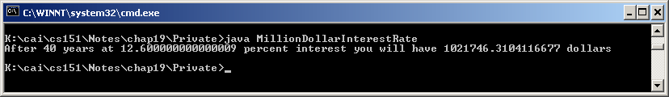

QUESTION 11:
Why is this statement from the program important:
dollars = initialAmount;


The complete program is below.
Here is the complete program. Notice how the pieces fit together. The counting loop is nested in the body of the result-controlled loop.
class MillionDollarInterestRate
{
public static void main( String[] args )
{
double initialAmount = 1000.00 ;
double dollars = 0.0;
double rate = -0.001 ;
int year;
while ( dollars < 1000000 )
{
// change to the next rate
rate = rate + 0.001;
// compute the dollars after 40 years at the current rate
year = 1 ;
dollars = initialAmount;
while ( year <= 40 )
{
dollars = dollars + dollars*rate ; // add another year's interest
dollars = dollars + 1000 ; // add in this year's contribution
year = year + 1 ;
}
}
System.out.println("After 40 years at " + rate*100
+ " percent interest you will have " + dollars + " dollars" );
}
}
Here is a run of the program:

Notice that this program has some floating point accuracy problems that should be fixed. In practice, financial programs are very carefully written and rarely use floating point. Programming languages intended for business have special data formats for money.
Why is this statement from the program important:
dollars = initialAmount;